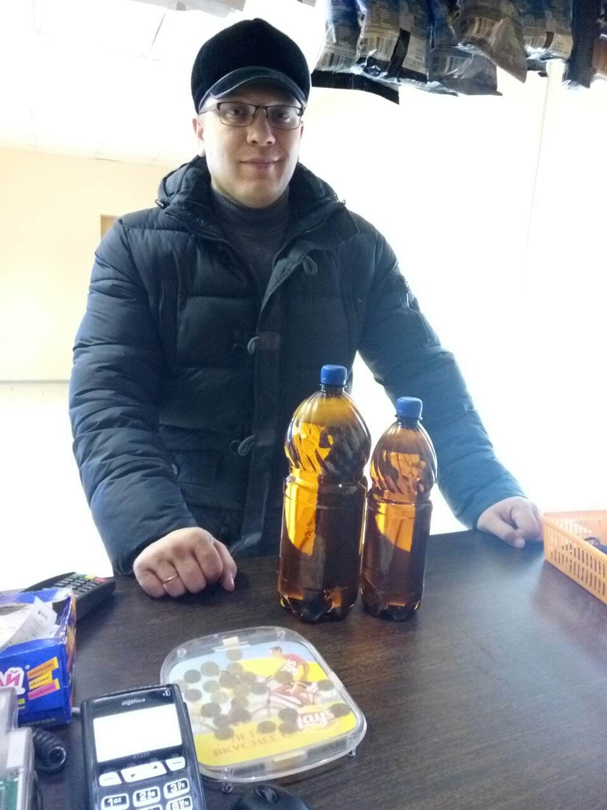
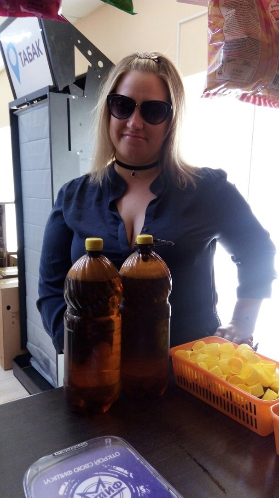

На сайте Псковского пивного надзора представлена виртуальная пивная коммуна, где пивные энтузиасты могут наслаждаться следующими возможностями:
-
Новости и розыгрыши:
Сайт регулярно обновляется свежими новостями из мира пива, включая информацию о новых сортах пива, пивоварнях, интересных мероприятиях и других пивных событиях. Также проводятся регулярные розыгрыши призов среди участников сообщества.
 -
Форум для общения:
На сайте присутствует активный форум, где участники могут обсуждать свои пивные предпочтения, делись впечатлениями о различных сортах пива, обсуждать новинки индустрии и обмениваться советами. Форум позволяет создать дружественное сообщество любителей пива.
 -
Сборные места для пива:
Сайт предоставляет информацию о лучших местах в городе Пскове, где можно собраться и насладиться атмосферой и разнообразием местного пива. Пользователи могут делиться рекомендациями о любимых пивных барах, ресторанах и пабах, а также организовывать встречи и пивные ивенты.